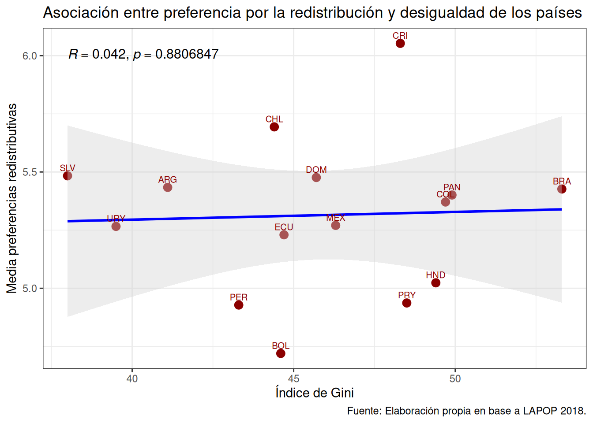
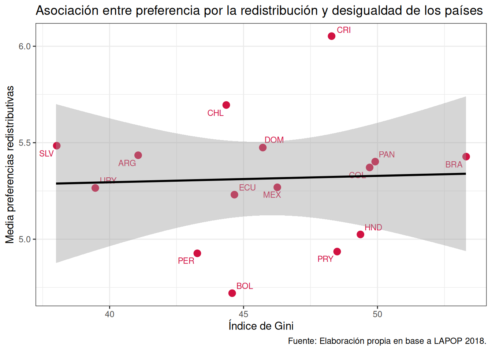
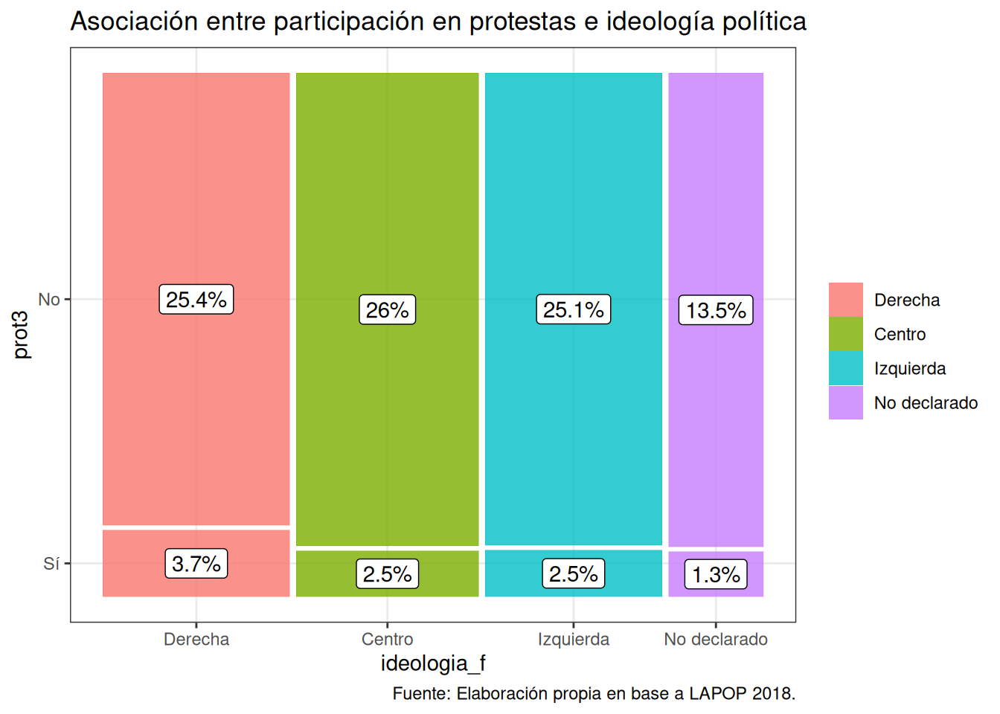

pacman::p_load(tidyverse, # Manipulacion datos
ggplot2, # Gráficos
sjPlot, # Tablas y gráficos
ggpubr, # Gráficos
ggmosaic) # Gráficos
options(scipen = 999) # para desactivar notacion cientifica
rm(list = ls()) # para limpiar el entorno de trabajoSesión aplicada: gráficos y tablas en Quarto
Sesión del sábado, 7 de noviembre de 2026
Preparación de datos
En esta ocasión trabajaremos con un subconjunto de datos previamente procesados derivados de las encuestas realizadas en diferentes países por el Latin American Public Opinion Proyect (LAPOP) en su ola del 2018. Para este ejercicio, obtendremos directamente esta base desde internet. No obstante, también tienes la opción de acceder a la misma información a través del siguiente enlace: LAPOP 2018. Desde allí, podrás descargar el archivo que contiene el subconjunto procesado de la base de datos LAPOP 2018.
Comencemos por preparar nuestros datos. Iniciamos cargando las librerías necesarias.
Cargamos los datos desde internet.
load(url("https://github.com/cursos-metodos-facso/datos-ejemplos/raw/main/lapop_proc_2018.RData")) #Cargar base de datosA continuación, exploramos la base de datos.
names(lapop) # Nombre de columnas [1] "year" "pais" "pais_name" "idnum" "upm"
[6] "strata" "wt" "weight1500" "sexo" "edad"
[11] "educ" "l1" "ideologia_f" "empleo" "decile"
[16] "it1" "prot3" "aoj12" "b2" "b3"
[21] "b4" "b10a" "b12" "b20" "b20a"
[26] "b21" "b21a" "n9" "n11" "n15"
[31] "ros4" "ing4" "eff1" "pn4" "exc7"
[36] "pol1" "vb2" "gini" "gdp" dim(lapop) # Dimensiones[1] 23386 39Contamos con 39 variables (columnas) y 23.386 observaciones (filas).
Realizamos un pequeño procesamiento de datos que nos servirá después.
# Transformamos las variables gini y gpd en variables numéricas
lapop <- lapop %>% mutate(across(c("gini", "gdp"), ~ as.numeric(.))) Gráficos
Diferencias de medias (o proporciones) entre grupos
db_g1 <- lapop %>%
group_by(ideologia_f) %>%
summarise(
media_ros4 = mean(ros4, na.rm = TRUE),
error_std = sd(ros4, na.rm = TRUE) / sqrt(n()),
ci_inf = media_ros4 - qt(0.975, df = n() - 1) * error_std,
ci_sup = media_ros4 + qt(0.975, df = n() - 1) * error_std
) %>%
na.omit()ggplot(data = db_g1,
mapping = aes(x = ideologia_f, y = media_ros4, group = ideologia_f)) + # especificamos datos y mapping
geom_bar(stat = "identity", color = "black", fill = "steelblue") + # agregamos geometria
geom_errorbar(aes(ymin = ci_inf, ymax = ci_sup), width = 0.2, color = "red") + # agregamos intervalo de confianza calculado previamente
scale_y_continuous(limits = c(0,7), n.breaks = 7) + # agregamos escala en eje Y y ponemos limites minimos y maximos
geom_text(aes(label = round(media_ros4,2)), vjust = 1.5, colour = "white") + # agregamos los valores de la media para cada barra/grupo
labs(title ="Media de preferencia por la redistribución según ideología política",
x = "Ideología política",
y = "Media",
caption = "Fuente: Elaboración propia en base a LAPOP 2018.") + # agregamos titulo, nombres a los ejes y fuente
theme_bw() # especificamos tema
Asociación entre continuas
Con ggplot2
db_g2 <- lapop %>%
group_by(pais) %>%
summarise(cm_ros4 = mean(ros4, na.rm = T),
cm_gini = mean(gini, na.rm = T)) %>%
ungroup()ggplot(data = db_g2,
mapping = aes(x = cm_gini, y = cm_ros4)) + # especificamos datos y mapping
geom_point(size = 3, color = "darkred") + # agregamos geometria y color
geom_smooth(stat = "smooth", position = "identity", method = "lm",
colour = "blue", size = 0.7) + # agregamos recta que representa la correlacion
scale_y_continuous(limits = c(4,6.5), breaks = seq(4,6.5, by = 0.5)) + # agregamos escala en eje Y y ponemos limites minimos y maximos
scale_x_continuous(n.breaks = 7) + # agregamos escala eje X para mostrar más valores
geom_text(aes(label = pais), size = 3, color = "black",
nudge_y = 0.15) + # agregamos los valores de la media para cada barra/grupo
labs(title ="Asociación entre preferencia por la redistribución y desigualdad de los países",
y = "Media preferencias redistributivas",
x = "Índice de Gini",
caption = "Fuente: Elaboración propia en base a LAPOP 2018.") + # agregamos titulo, nombres a los ejes y fuente
theme_bw() # especificamos temaWarning: Using `size` aesthetic for lines was deprecated in ggplot2 3.4.0.
ℹ Please use `linewidth` instead.`geom_smooth()` using formula = 'y ~ x'
Con ggpubr
ggscatter(data = db_g2,
x = "cm_gini",
y = "cm_ros4",
color = "darkred",
cor.coef = T, # mostrar coef corr
cor.coef.size = 4, # tamaño texto coef corr
add = "reg.line", # mostrar linea de reg
conf.int = T, # mostrar SE
add.params = list(color = "blue", fill = "lightgray"), # colores
label = "pais",
size = 3,
font.label = c(8, "plain")
) +
labs(title ="Asociación entre preferencia por la redistribución y desigualdad de los países",
y = "Media preferencias redistributivas",
x = "Índice de Gini",
caption = "Fuente: Elaboración propia en base a LAPOP 2018.") + # agregamos titulo, nombres a los ejes y fuente
theme_bw() # especificamos tema
Con sjPlot
sjPlot::plot_scatter(
data = db_g2,
x = cm_gini,
y = cm_ros4,
fit.line = "lm", # Mostrar línea de regresión
show.ci = TRUE, # Mostrar intervalo de confianza
dot.size = 3,
dot.labels = db_g2$pais # Etiquetas de los puntos
) +
labs(title ="Asociación entre preferencia por la redistribución y desigualdad de los países",
y = "Media preferencias redistributivas",
x = "Índice de Gini",
caption = "Fuente: Elaboración propia en base a LAPOP 2018.") + # agregamos titulo, nombres a los ejes y fuente
theme_bw() # especificamos tema`geom_smooth()` using formula = 'y ~ x'
Asociación entre categóricas
Con ggmosaic y ggplot2
db_g3 <- lapop %>%
dplyr::select(prot3, ideologia_f) %>%
na.omit()
head(db_g3)
## # A tibble: 6 × 2
## prot3 ideologia_f
## <fct> <fct>
## 1 No Centro
## 2 No No declarado
## 3 No Derecha
## 4 No Centro
## 5 No Centro
## 6 No Centroggplot(data = db_g3) +
geom_mosaic(aes(product(prot3, ideologia_f), fill = ideologia_f)) + # agregamos mapping y geometría a la vez
geom_label(data = layer_data(last_plot(), 1),
aes(x = (xmin + xmax)/ 2,
y = (ymin + ymax)/ 2,
label = paste0(round((.wt/sum(.wt))*100,1),"%"))) +# agregamos porcentajes de cada combinación de categórias
scale_fill_discrete(name = "",
labels = c("Derecha",
"Centro",
"Izquierda",
"No declarado")) +
labs(title ="Asociación entre participación en protestas e ideología política",
y = "Participación protesta",
x = "Ideología política",
caption = "Fuente: Elaboración propia en base a LAPOP 2018.") + # agregamos titulo, nombres a los ejes y fuente
theme_bw() # especificamos tema
Tablas
Cargamos las librerías para esta sección
pacman::p_load(tidyverse, # Manipulacion datos
sjmisc, # Descriptivos
knitr, # Render y tablas
kableExtra, # Formateo tablas
summarytools, # Tablas
sjPlot, # Tablas y gráficos
stargazer, # Tablas
janitor, # Tablas y formateo
crosstable, # Tablas
table1 # Tablas
)Tablas con kable y kableExtra
Confianza interpersonal según país
- Creamos la tabla
tab1 <- lapop %>%
group_by(pais, it1) %>% # agrupamos por pais y variable
summarise(n = n()) %>% # contamos por categ de respuesta
mutate(prop = round((n / sum(n)) * 100, 2)) %>% # porcentaje
na.omit() %>% # borramos NA
pivot_wider(id_cols = pais, names_from = it1, values_from = prop) # convertimos a formato ancho`summarise()` has regrouped the output.
ℹ Summaries were computed grouped by pais and it1.
ℹ Output is grouped by pais.
ℹ Use `summarise(.groups = "drop_last")` to silence this message.
ℹ Use `summarise(.by = c(pais, it1))` for per-operation grouping
(`?dplyr::dplyr_by`) instead.tab1# A tibble: 15 × 5
# Groups: pais [15]
pais `1` `2` `3` `4`
<chr> <dbl> <dbl> <dbl> <dbl>
1 ARG 7.98 21.7 45.1 23.2
2 BOL 13.6 40.5 31.9 11.6
3 BRA 12.9 45.4 19.8 19.8
4 CHL 10.6 23.4 40.5 24.6
5 COL 9.14 25.7 34.4 29.0
6 CRI 8.53 22.6 34.6 32.2
7 DOM 11.3 29.0 31.3 24.0
8 ECU 11.7 37.8 32.2 17.3
9 HND 14.0 28.6 22.8 29.3
10 MEX 11.2 33.2 31.5 20.7
11 PAN 14.2 34 31.5 18.5
12 PER 14.9 42.3 31.2 10.6
13 PRY 9.7 24.1 35.6 26.9
14 SLV 8.6 32.3 26.3 29.2
15 URY 7.08 18.7 43.8 27.1- Aplicamos cambios de formato
tabla1 <- tab1 %>%
kable(format = "markdown",
align = "c",
col.names = c("País", "Nada confiable", "Poco confiable", "Algo confiable", "Muy confiable"),
caption = "Tabla 1. Confianza interpersonal según país") %>%
kableExtra::kable_classic(full_width = FALSE, position = "center", font_size = 14) %>%
kableExtra::add_footnote(label = "Fuente: Elaboración propia en base a LAPOP 2018.")
tabla1 # ejecutamos el objeto para visualizar la tabla| País | Nada confiable | Poco confiable | Algo confiable | Muy confiable |
|---|---|---|---|---|
| ARG | 7.98 | 21.66 | 45.09 | 23.23 |
| BOL | 13.56 | 40.49 | 31.87 | 11.59 |
| BRA | 12.88 | 45.39 | 19.76 | 19.76 |
| CHL | 10.56 | 23.44 | 40.54 | 24.60 |
| COL | 9.14 | 25.74 | 34.40 | 28.98 |
| CRI | 8.53 | 22.58 | 34.64 | 32.25 |
| DOM | 11.28 | 29.02 | 31.27 | 24.01 |
| ECU | 11.68 | 37.83 | 32.22 | 17.29 |
| HND | 14.04 | 28.65 | 22.82 | 29.29 |
| MEX | 11.20 | 33.16 | 31.46 | 20.70 |
| PAN | 14.24 | 34.00 | 31.49 | 18.47 |
| PER | 14.92 | 42.34 | 31.23 | 10.59 |
| PRY | 9.70 | 24.09 | 35.64 | 26.86 |
| SLV | 8.60 | 32.30 | 26.27 | 29.19 |
| URY | 7.08 | 18.72 | 43.77 | 27.07 |
| a Fuente: Elaboración propia en base a LAPOP 2018. |
Descriptivos de edad según país
- Creamos la tabla
tab2 <- lapop %>%
group_by(pais) %>%
summarise(
n = n(), # Tamaño muestral
min = min(edad, na.rm = T), # Mínimo
max = max(edad, na.rm = T), # Máximo
media = round(mean(edad, na.rm = T), 2), # Media redondeada a 2 digitos
sd = round(sd(edad, na.rm = T), 2), # Desviación estándar redondeada a 2 digitos
mediana = median(edad, na.rm = T), # Mediana
cv = round((media/sd)*100, 2) # Coeficiente de variación redondeado a 2 digi
)- Aplicamos cambios de formato
tabla2 <- tab2 %>%
kable(format = "markdown",
align = "c",
col.names = c("País", "Tamaño muestral", "Mínimo", "Máximo", "Media", "Desv. estándar", "Mediana", "Coef. variación"),
caption = "Tabla 2. Edad según país") %>%
kableExtra::kable_classic(full_width = FALSE, position = "center", font_size = 14) %>%
kableExtra::add_footnote(label = "Fuente: Elaboración propia en base a LAPOP 2018.")
tabla2 # ejecutamos el objeto para visualizar la tabla| País | Tamaño muestral | Mínimo | Máximo | Media | Desv. estándar | Mediana | Coef. variación |
|---|---|---|---|---|---|---|---|
| ARG | 1528 | 16 | 90 | 41.84 | 17.75 | 39.0 | 235.72 |
| BOL | 1682 | 18 | 89 | 39.52 | 16.30 | 36.0 | 242.45 |
| BRA | 1498 | 16 | 92 | 39.15 | 16.25 | 37.0 | 240.92 |
| CHL | 1638 | 18 | 92 | 42.22 | 16.80 | 40.0 | 251.31 |
| COL | 1663 | 18 | 90 | 40.36 | 16.33 | 37.0 | 247.15 |
| CRI | 1501 | 18 | 89 | 40.50 | 16.88 | 37.0 | 239.93 |
| DOM | 1516 | 18 | 87 | 40.05 | 16.98 | 37.0 | 235.87 |
| ECU | 1533 | 16 | 92 | 38.16 | 17.10 | 35.0 | 223.16 |
| HND | 1560 | 18 | 89 | 38.17 | 16.26 | 34.0 | 234.75 |
| MEX | 1580 | 18 | 88 | 42.09 | 17.03 | 40.0 | 247.15 |
| PAN | 1559 | 18 | 93 | 39.56 | 16.17 | 37.5 | 244.65 |
| PER | 1521 | 18 | 91 | 38.85 | 15.54 | 36.0 | 250.00 |
| PRY | 1515 | 18 | 87 | 40.00 | 16.28 | 37.0 | 245.70 |
| SLV | 1511 | 18 | 99 | 39.99 | 16.62 | 38.0 | 240.61 |
| URY | 1581 | 18 | 95 | 46.19 | 17.89 | 44.0 | 258.19 |
| a Fuente: Elaboración propia en base a LAPOP 2018. |
Tablas univariadas con otros paquetes
# Creemos una version de lapop solo con algunas variables como ejemplo
data_example <- lapop %>%
select(pais, it1, edad, sexo, gini, gdp)Con summarytools
tab <- summarytools::dfSummary(data_example)
summarytools::view(tab, method = "render")Data Frame Summary
data_example
Dimensions: 23386 x 6Duplicates: 16464
| No | Variable | Label | Stats / Values | Freqs (% of Valid) | Graph | Valid | Missing | |||||||||||||||||||||||||||||||||||||||||||||||||||||||
|---|---|---|---|---|---|---|---|---|---|---|---|---|---|---|---|---|---|---|---|---|---|---|---|---|---|---|---|---|---|---|---|---|---|---|---|---|---|---|---|---|---|---|---|---|---|---|---|---|---|---|---|---|---|---|---|---|---|---|---|---|---|---|
| 1 | pais [character] | País |
|
|
 |
23386 (100.0%) | 0 (0.0%) | |||||||||||||||||||||||||||||||||||||||||||||||||||||||
| 2 | it1 [numeric] | Confianza Interpersonal |
|
|
 |
22783 (97.4%) | 603 (2.6%) | |||||||||||||||||||||||||||||||||||||||||||||||||||||||
| 3 | edad [numeric] | Edad |
|
81 distinct values |  |
23372 (99.9%) | 14 (0.1%) | |||||||||||||||||||||||||||||||||||||||||||||||||||||||
| 4 | sexo [factor] | Sexo |
|
|
 |
23373 (99.9%) | 13 (0.1%) | |||||||||||||||||||||||||||||||||||||||||||||||||||||||
| 5 | gini [numeric] |
|
15 distinct values |  |
23386 (100.0%) | 0 (0.0%) | ||||||||||||||||||||||||||||||||||||||||||||||||||||||||
| 6 | gdp [numeric] |
|
15 distinct values |  |
23386 (100.0%) | 0 (0.0%) |
Generated by summarytools 1.1.4 (R version 4.3.3)
2026-11-07
tab <- summarytools::descr(data_example$edad)
summarytools::view(tab, method = "render")Descriptive Statistics
data_example$edad
Label: EdadN: 23386
| edad | |
|---|---|
| Mean | 40.46 |
| Std.Dev | 16.80 |
| Min | 16.00 |
| Q1 | 27.00 |
| Median | 38.00 |
| Q3 | 52.00 |
| Max | 99.00 |
| MAD | 17.79 |
| IQR | 25.00 |
| CV | 0.42 |
| Skewness | 0.57 |
| SE.Skewness | 0.02 |
| Kurtosis | -0.58 |
| N.Valid | 23372 |
| N | 23386 |
| Pct.Valid | 99.94 |
Generated by summarytools 1.1.4 (R version 4.3.3)
2026-11-07
Con stargazer
stargazer(as.data.frame(data_example), type = "text", summary.stat = c("mean", "sd", "min", "max"))
=======================================
Statistic Mean St. Dev. Min Max
---------------------------------------
it1 2.694 0.953 1 4
edad 40.461 16.798 16 99
gini 45.778 4.043 38.000 53.300
gdp 8.748 4.278 2.475 16.038
---------------------------------------Con psych
psych::describe(data_example) %>%
kable() %>%
kable_styling(full_width = TRUE)| vars | n | mean | sd | median | trimmed | mad | min | max | range | skew | kurtosis | se | |
|---|---|---|---|---|---|---|---|---|---|---|---|---|---|
| pais* | 1 | 23386 | 7.950911 | 4.3253391 | 8.000000 | 7.935810 | 5.930400 | 1.00000 | 15.00000 | 14.00000 | 0.0201754 | -1.2152000 | 0.0282841 |
| it1 | 2 | 22783 | 2.694333 | 0.9532423 | 3.000000 | 2.742909 | 1.482600 | 1.00000 | 4.00000 | 3.00000 | -0.1424032 | -0.9507169 | 0.0063154 |
| edad | 3 | 23372 | 40.460551 | 16.7983821 | 38.000000 | 39.158199 | 17.791200 | 16.00000 | 99.00000 | 83.00000 | 0.5674996 | -0.5770780 | 0.1098802 |
| sexo* | 4 | 23373 | 1.502246 | 0.5000057 | 2.000000 | 1.502808 | 0.000000 | 1.00000 | 2.00000 | 1.00000 | -0.0089842 | -2.0000048 | 0.0032705 |
| gini | 5 | 23386 | 45.777846 | 4.0429160 | 45.700000 | 45.896141 | 4.151280 | 38.00000 | 53.30000 | 15.30000 | -0.2035078 | -0.6251471 | 0.0264373 |
| gdp | 6 | 23386 | 8.747801 | 4.2779214 | 7.997761 | 8.634054 | 6.045964 | 2.47517 | 16.03793 | 13.56276 | 0.2534969 | -1.2525404 | 0.0279740 |
Con sjmisc
sjmisc::frq(data_example$it1) %>%
kable()
|
Con table1
table1::table1(~ factor(sexo) + edad + gini + gdp, data = data_example)| Overall (N=23386) |
|
|---|---|
| factor(sexo) | |
| Hombre | 11634 (49.7%) |
| Mujer | 11739 (50.2%) |
| Missing | 13 (0.1%) |
| Edad | |
| Mean (SD) | 40.5 (16.8) |
| Median [Min, Max] | 38.0 [16.0, 99.0] |
| Missing | 14 (0.1%) |
| gini | |
| Mean (SD) | 45.8 (4.04) |
| Median [Min, Max] | 45.7 [38.0, 53.3] |
| gdp | |
| Mean (SD) | 8.75 (4.28) |
| Median [Min, Max] | 8.00 [2.48, 16.0] |
Tablas bivariadas con otros paquetes
Con summarytools
tab <- summarytools::ctable(data_example$pais, data_example$sexo)
summarytools::view(tab, method = "viewer")Switching method to 'browser'Output file written: /tmp/RtmpqFTVSf/file11879a38395ad.htmlCon table1
table1::table1(~ factor(sexo) + edad + gini + gdp | pais, data = data_example)Warning in .table1.internal(x = x, labels = labels, groupspan = groupspan, :
Table has 16 columns. Are you sure this is what you want?| ARG (N=1528) |
BOL (N=1682) |
BRA (N=1498) |
CHL (N=1638) |
COL (N=1663) |
CRI (N=1501) |
DOM (N=1516) |
ECU (N=1533) |
HND (N=1560) |
MEX (N=1580) |
PAN (N=1559) |
PER (N=1521) |
PRY (N=1515) |
SLV (N=1511) |
URY (N=1581) |
Overall (N=23386) |
|
|---|---|---|---|---|---|---|---|---|---|---|---|---|---|---|---|---|
| factor(sexo) | ||||||||||||||||
| Hombre | 758 (49.6%) | 846 (50.3%) | 748 (49.9%) | 813 (49.6%) | 830 (49.9%) | 750 (50.0%) | 753 (49.7%) | 760 (49.6%) | 778 (49.9%) | 775 (49.1%) | 782 (50.2%) | 758 (49.8%) | 755 (49.8%) | 755 (50.0%) | 773 (48.9%) | 11634 (49.7%) |
| Mujer | 770 (50.4%) | 836 (49.7%) | 750 (50.1%) | 824 (50.3%) | 833 (50.1%) | 751 (50.0%) | 761 (50.2%) | 764 (49.8%) | 782 (50.1%) | 805 (50.9%) | 777 (49.8%) | 762 (50.1%) | 760 (50.2%) | 756 (50.0%) | 808 (51.1%) | 11739 (50.2%) |
| Missing | 0 (0%) | 0 (0%) | 0 (0%) | 1 (0.1%) | 0 (0%) | 0 (0%) | 2 (0.1%) | 9 (0.6%) | 0 (0%) | 0 (0%) | 0 (0%) | 1 (0.1%) | 0 (0%) | 0 (0%) | 0 (0%) | 13 (0.1%) |
| Edad | ||||||||||||||||
| Mean (SD) | 41.8 (17.8) | 39.5 (16.3) | 39.1 (16.2) | 42.2 (16.8) | 40.4 (16.3) | 40.5 (16.9) | 40.0 (17.0) | 38.2 (17.1) | 38.2 (16.3) | 42.1 (17.0) | 39.6 (16.2) | 38.8 (15.5) | 40.0 (16.3) | 40.0 (16.6) | 46.2 (17.9) | 40.5 (16.8) |
| Median [Min, Max] | 39.0 [16.0, 90.0] | 36.0 [18.0, 89.0] | 37.0 [16.0, 92.0] | 40.0 [18.0, 92.0] | 37.0 [18.0, 90.0] | 37.0 [18.0, 89.0] | 37.0 [18.0, 87.0] | 35.0 [16.0, 92.0] | 34.0 [18.0, 89.0] | 40.0 [18.0, 88.0] | 37.5 [18.0, 93.0] | 36.0 [18.0, 91.0] | 37.0 [18.0, 87.0] | 38.0 [18.0, 99.0] | 44.0 [18.0, 95.0] | 38.0 [16.0, 99.0] |
| Missing | 0 (0%) | 0 (0%) | 0 (0%) | 1 (0.1%) | 0 (0%) | 0 (0%) | 2 (0.1%) | 9 (0.6%) | 0 (0%) | 0 (0%) | 1 (0.1%) | 1 (0.1%) | 0 (0%) | 0 (0%) | 0 (0%) | 14 (0.1%) |
| gini | ||||||||||||||||
| Mean (SD) | 41.1 (0) | 44.6 (0) | 53.3 (0) | 44.4 (0) | 49.7 (0) | 48.3 (0) | 45.7 (0) | 44.7 (0) | 49.4 (0) | 46.3 (0) | 49.9 (0) | 43.3 (0) | 48.5 (0) | 38.0 (0) | 39.5 (0) | 45.8 (4.04) |
| Median [Min, Max] | 41.1 [41.1, 41.1] | 44.6 [44.6, 44.6] | 53.3 [53.3, 53.3] | 44.4 [44.4, 44.4] | 49.7 [49.7, 49.7] | 48.3 [48.3, 48.3] | 45.7 [45.7, 45.7] | 44.7 [44.7, 44.7] | 49.4 [49.4, 49.4] | 46.3 [46.3, 46.3] | 49.9 [49.9, 49.9] | 43.3 [43.3, 43.3] | 48.5 [48.5, 48.5] | 38.0 [38.0, 38.0] | 39.5 [39.5, 39.5] | 45.7 [38.0, 53.3] |
| gdp | ||||||||||||||||
| Mean (SD) | 13.1 (0) | 3.29 (0) | 8.58 (0) | 13.9 (0) | 6.27 (0) | 12.5 (0) | 8.00 (0) | 5.95 (0) | 2.48 (0) | 9.95 (0) | 14.9 (0) | 6.57 (0) | 5.87 (0) | 3.92 (0) | 16.0 (0) | 8.75 (4.28) |
| Median [Min, Max] | 13.1 [13.1, 13.1] | 3.29 [3.29, 3.29] | 8.58 [8.58, 8.58] | 13.9 [13.9, 13.9] | 6.27 [6.27, 6.27] | 12.5 [12.5, 12.5] | 8.00 [8.00, 8.00] | 5.95 [5.95, 5.95] | 2.48 [2.48, 2.48] | 9.95 [9.95, 9.95] | 14.9 [14.9, 14.9] | 6.57 [6.57, 6.57] | 5.87 [5.87, 5.87] | 3.92 [3.92, 3.92] | 16.0 [16.0, 16.0] | 8.00 [2.48, 16.0] |
Con sjPlot
sjPlot::tab_xtab(data_example$pais, data_example$it1, show.row.prc = TRUE)| País | Confianza Interpersonal |
Total | |||
|---|---|---|---|---|---|
| Nada confiable | Poco confiable | Algo confiable | Muy confiable | ||
| ARG | 122 8.1 % |
331 22.1 % |
689 46 % |
355 23.7 % |
1497 100 % |
| BOL | 228 13.9 % |
681 41.5 % |
536 32.7 % |
195 11.9 % |
1640 100 % |
| BRA | 193 13.2 % |
680 46.4 % |
296 20.2 % |
296 20.2 % |
1465 100 % |
| CHL | 173 10.7 % |
384 23.6 % |
664 40.9 % |
403 24.8 % |
1624 100 % |
| COL | 152 9.3 % |
428 26.2 % |
572 35 % |
482 29.5 % |
1634 100 % |
| CRI | 128 8.7 % |
339 23 % |
520 35.4 % |
484 32.9 % |
1471 100 % |
| DOM | 171 11.8 % |
440 30.4 % |
474 32.7 % |
364 25.1 % |
1449 100 % |
| ECU | 179 11.8 % |
580 38.2 % |
494 32.5 % |
265 17.5 % |
1518 100 % |
| HND | 219 14.8 % |
447 30.2 % |
356 24.1 % |
457 30.9 % |
1479 100 % |
| MEX | 177 11.6 % |
524 34.4 % |
497 32.6 % |
327 21.4 % |
1525 100 % |
| PAN | 222 14.5 % |
530 34.6 % |
491 32.1 % |
288 18.8 % |
1531 100 % |
| PER | 227 15.1 % |
644 42.7 % |
475 31.5 % |
161 10.7 % |
1507 100 % |
| PRY | 147 10.1 % |
365 25 % |
540 37 % |
407 27.9 % |
1459 100 % |
| SLV | 130 8.9 % |
488 33.5 % |
397 27.3 % |
441 30.3 % |
1456 100 % |
| URY | 112 7.3 % |
296 19.4 % |
692 45.3 % |
428 28 % |
1528 100 % |
| Total | 2580 11.3 % |
7157 31.4 % |
7693 33.8 % |
5353 23.5 % |
22783 100 % |
| χ2=1306.960 · df=42 · Cramer's V=0.138 · p=0.000 | |||||
Con crosstable
crosstable::crosstable(data_example, pais, by = sexo, margin=c("row", "col"), total = "both") %>%
kable() %>%
kable_styling(full_width = TRUE)| .id | label | variable | Hombre | Mujer | NA | Total |
|---|---|---|---|---|---|---|
| pais | País | ARG | 758 (6.52% / 49.61%) | 770 (6.56% / 50.39%) | 0 | 1528 (6.53%) |
| pais | País | BOL | 846 (7.27% / 50.30%) | 836 (7.12% / 49.70%) | 0 | 1682 (7.19%) |
| pais | País | BRA | 748 (6.43% / 49.93%) | 750 (6.39% / 50.07%) | 0 | 1498 (6.41%) |
| pais | País | CHL | 813 (6.99% / 49.66%) | 824 (7.02% / 50.34%) | 1 | 1638 (7.00%) |
| pais | País | COL | 830 (7.13% / 49.91%) | 833 (7.10% / 50.09%) | 0 | 1663 (7.11%) |
| pais | País | CRI | 750 (6.45% / 49.97%) | 751 (6.40% / 50.03%) | 0 | 1501 (6.42%) |
| pais | País | DOM | 753 (6.47% / 49.74%) | 761 (6.48% / 50.26%) | 2 | 1516 (6.48%) |
| pais | País | ECU | 760 (6.53% / 49.87%) | 764 (6.51% / 50.13%) | 9 | 1533 (6.56%) |
| pais | País | HND | 778 (6.69% / 49.87%) | 782 (6.66% / 50.13%) | 0 | 1560 (6.67%) |
| pais | País | MEX | 775 (6.66% / 49.05%) | 805 (6.86% / 50.95%) | 0 | 1580 (6.76%) |
| pais | País | PAN | 782 (6.72% / 50.16%) | 777 (6.62% / 49.84%) | 0 | 1559 (6.67%) |
| pais | País | PER | 758 (6.52% / 49.87%) | 762 (6.49% / 50.13%) | 1 | 1521 (6.50%) |
| pais | País | PRY | 755 (6.49% / 49.83%) | 760 (6.47% / 50.17%) | 0 | 1515 (6.48%) |
| pais | País | SLV | 755 (6.49% / 49.97%) | 756 (6.44% / 50.03%) | 0 | 1511 (6.46%) |
| pais | País | URY | 773 (6.64% / 48.89%) | 808 (6.88% / 51.11%) | 0 | 1581 (6.76%) |
| pais | País | Total | 11634 (49.78%) | 11739 (50.22%) | 13 | 23386 (100%) |
Con dplyr y janitor
data_example %>%
janitor::tabyl(pais, it1) %>% # Esto reemplaza el procesamiento, buena alternativa
kable() %>%
kable_styling(full_width = TRUE)| pais | 1 | 2 | 3 | 4 | NA_ |
|---|---|---|---|---|---|
| ARG | 122 | 331 | 689 | 355 | 31 |
| BOL | 228 | 681 | 536 | 195 | 42 |
| BRA | 193 | 680 | 296 | 296 | 33 |
| CHL | 173 | 384 | 664 | 403 | 14 |
| COL | 152 | 428 | 572 | 482 | 29 |
| CRI | 128 | 339 | 520 | 484 | 30 |
| DOM | 171 | 440 | 474 | 364 | 67 |
| ECU | 179 | 580 | 494 | 265 | 15 |
| HND | 219 | 447 | 356 | 457 | 81 |
| MEX | 177 | 524 | 497 | 327 | 55 |
| PAN | 222 | 530 | 491 | 288 | 28 |
| PER | 227 | 644 | 475 | 161 | 14 |
| PRY | 147 | 365 | 540 | 407 | 56 |
| SLV | 130 | 488 | 397 | 441 | 55 |
| URY | 112 | 296 | 692 | 428 | 53 |
Figuras dentro de Quarto
Gráficos
- Generamos el objeto
g1donde almacenaremos la información que queremos graficar.
g1 <- lapop %>%
group_by(pais) %>%
summarise(cm_ros4 = mean(ros4, na.rm = T),
cm_gini = mean(gini, na.rm = T)) %>%
ungroup()- Creamos el gráfico dentro de un objeto llamado
grafico1con las especificaciones en el chunk
grafico1 <- ggplot(data = g1,
mapping = aes(x = cm_gini, y = cm_ros4, label = pais)) +
geom_point() +
geom_smooth(method = "lm",colour = "black",fill="lightblue",size=0.5) +
geom_text(aes(label = pais), size = 3, color = "black", nudge_y = 0.05) +
labs(x = "Índice de Gini",
y = "Preferencias redistributivas",
caption = "Fuente: Elaboración propia en base a LAPOP 2018") +
theme_bw()
grafico1`geom_smooth()` using formula = 'y ~ x'Warning: The following aesthetics were dropped during statistical transformation: label.
ℹ This can happen when ggplot fails to infer the correct grouping structure in
the data.
ℹ Did you forget to specify a `group` aesthetic or to convert a numerical
variable into a factor?
En la Figura 1 se muestra la asociación entre el promedio de preferencia por la redistribución y el nivel de desigualdad ecónomica de los países.
Tablas
- Generamos el objeto
tab3que contiene la información que presentaremos en una tabla
tab3 <- lapop %>%
group_by(pais) %>%
summarise(n = n(),
media = round(mean(edad, na.rm = TRUE), 1)) %>%
head(5)- Creamos la tabla mediante
kablecon las especificaciones en el chunk
kable(tab3,
col.names = c("País", "N", "Edad promedio"),
align = "lcc")| País | N | Edad promedio |
|---|---|---|
| ARG | 1528 | 41.8 |
| BOL | 1682 | 39.5 |
| BRA | 1498 | 39.1 |
| CHL | 1638 | 42.2 |
| COL | 1663 | 40.4 |
En la Tabla 1 se muestra la edad promedio de las personas encuestadas en cinco países de la base LAPOP 2018.